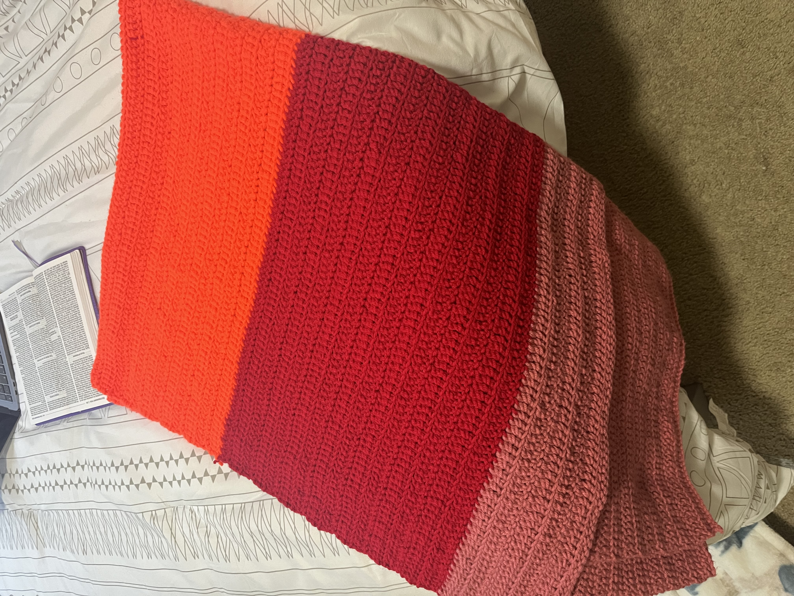

How did Monticello get involved?
New Salem United Methodist Church is a church in Statesville, NC known for making prayer shawls.
A lady at Monticello Methodist Church, who knew how to crochet, heard about this and decdied to get together with other ladies of the church and create a crochet group to teach more people of the congregation how to crochet.
The purpose of this group is to teach these people how to crochet to eventually help make more prayer shawls for the community of Statesville.
Example of a prayer shawl:
